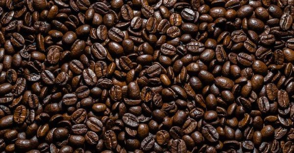
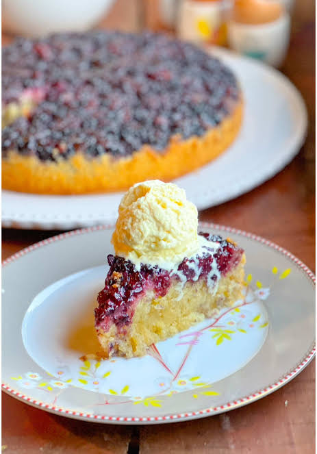
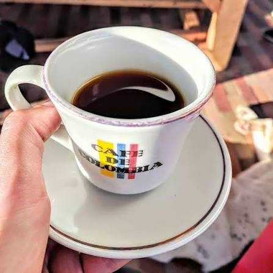
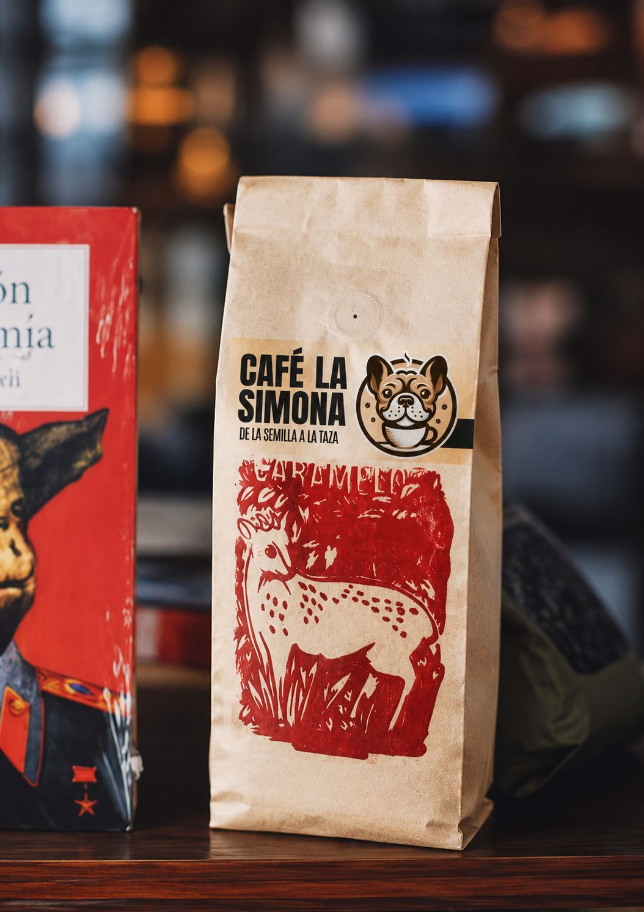
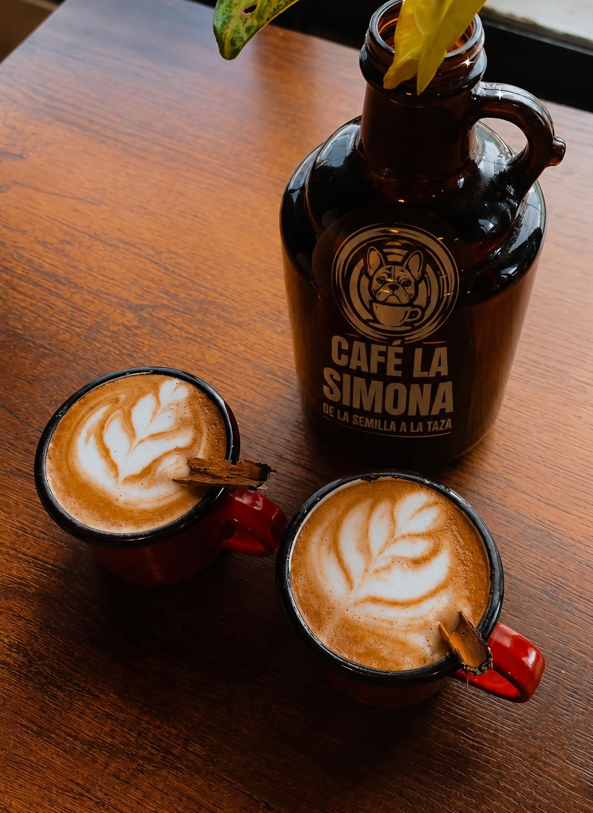

¿Quiénes somos?
Café La Simona es una idea de negocio enfocada en la comercialización de cafe nariñense. Buscamos ofrecer un producto de buena calidad y representar la tradición cafetera de nuestro país.
Café La Simona es un emprendimiento colombiano dedicado a ofrecer café de excelente calidad, conservando el sabor y la tradición de nuestro café.
Nuestro objetivo es brindar a nuestros clientes una experiencia agradable mediante productos de calidad, buen servicio y el auténtico sabor del café colombiano.
Conoce nuestros productos
Café La Simona es una idea de negocio enfocada en la comercialización de cafe nariñense. Buscamos ofrecer un producto de buena calidad y representar la tradición cafetera de nuestro país.
Nuestro principal objetivo es ofrecer café de calidad y satisfacer las necesidades de nuestros clientes.
Ofrecer café nariñense de excelente calidad, proporcionando a nuestros clientes productos deliciosos y un servicio responsable y cercano.
Ser una marca reconocida por la calidad de sus productos y por representar la tradición del café nariñense, creciendo y llegando a más clientes.
Conoce algunos de los productos que hacen parte de Café La Simona.

Torta de mora preparada por nosotros.

Café basico, pero de muy buena calidad

Granos de café seleccionados para conservar todo su aroma y sabor.

Cafe con Leche, muy delicioso
Si deseas conocer más sobre Café La Simona, puedes comunicarte con nosotros.
Teléfono: 302 342 2352
Correo: cafelassimona@gmail.com
Ubicación: Pasto, Colombia
¿Quieres conocer más sobre nuestro café? Déjanos tus datos y nos comunicaremos contigo.